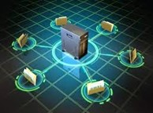
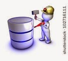
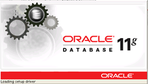

4.1 Introducción a las tecnologías emergentes en bases de datos
Hecho por: Jose Gabriel Martinez Cuenca
4.1 Introducción a las tecnologías emergentes en bases de datos
Las bases de datos tradicionales se organizan por campos, registros y archivos. Un campo es una pieza única de información; un registro es un sistema completo de campos; y un archivo es una colección de registros.
Datawarehouse
Es una colección de datos orientada a un determinado ámbito, integrado, no volátil y variable en el tiempo, que ayuda a la toma de decisiones en la entidad en la que se utiliza. Se trata, sobre todo, de un expediente completo de una organización, más allá de la información transaccional y operacional, almacenada en una base de datos diseñada para favorecer el análisis y la divulgación eficiente de datos.

Ventajas:
• Proporciona información clave para la toma de decisiones empresariales.
• Mejora la calidad de las decisiones tomadas.
• Especialmente útil para el medio y largo plazo.
• Son sistemas relativamente sencillos de instalar si las fuentes de datos y los objetivos están claros.
• Muy útiles para el almacenamiento de análisis y consultas de históricos.
• Proporciona un gran poder de procesamiento de información.
• Permite una mayor flexibilidad y rapidez en el acceso a la información.
• Facilita la toma de decisiones en los negocios.
• Las empresas obtienen un aumento de la productividad.
• Proporciona una comunicación fiable entre todos los departamentos de la empresa.
• Mejora las relaciones con los proveedores y los clientes.
• Permite conocer qué está pasando en el negocio, es decir, estar siempre enterado de los buenos y malos resultados.
• Transforma los datos en información y la información en conocimiento
• Permite hacer planes de forma más efectiva.
• Reduce los tiempos de respuesta y los costes de operación.
• Datawarehouse proporciona una información de gestión accesible, correcta, uniforme y actualizada. Proporciona un menor coste en la toma de decisiones, una mayor flexibilidad ante el entorno, un mejor servicio al cliente y permite el rediseño de los procesos.
Desventajas:
• No es muy útil para la toma de decisiones en tiempo real debido al largo tiempo de procesamiento que puede requerir.
• Requiere de continua limpieza, transformación e integración de datos.
• Mantenimiento.
• En un proceso de implantación puede encontrarse dificultades ante los diferentes objetivos que pretende una organización.
• Una vez implementado puede ser complicado añadir nuevas fuentes de datos.
• Requieren una revisión del modelo de datos, objetos, transacciones y además del almacenamiento.
• Tienen un diseño complejo y multidisciplinar.
• Requieren una reestructuración de los sistemas operacionales.
• Tienen un alto coste.
• Requieren sistemas, aplicaciones y almacenamiento específico.
• Las empresas que utilizan datawarehouse son fundamentalmente aquellas que manejan grandes volúmenes de datos relativos a clientes, compras, marketing, transacciones, operaciones. Como lo son las empresas de telecomunicaciones, transporte, turismo, fabricación de bienes de consumo masivo, etc.
Bases de Datos Distribuidas
Es un conjunto de múltiples bases de datos lógicamente relacionadas las cuales se encuentran distribuidas en diferentes espacios lógicos e interconectados por una red de comunicaciones.
Las Bases de Datos Distribuida (SBDD) es un sistema en el cual múltiples sitios de bases de datos están ligados por un sistema de comunicaciones de tal forma que, un usuario en cualquier sitio puede acceder los datos en cualquier parte de la red exactamente como si estos fueran accedidos de forma local.
Ventajas
• Refleja una estructura organizacional
• Autonomía local
• Disponibilidad
• Rendimiento
• Economía
• Modularidad
Desventajas
• Complejidad
• Economía
• Seguridad
• Integridad
• Falta de experiencia
• Carencia de estándares
• Diseño de la base de datos se vuelve más complejo
Datamining
Es un campo de las ciencias de la computación referido al proceso que intenta descubrir patrones en grandes volúmenes de conjuntos de datos.1 Utiliza los métodos de la inteligencia artificial, aprendizaje automático, estadística y sistemas de bases de datos. El objetivo general del proceso de minería de datos consiste en extraer información de un conjunto de datos y transformarla en una estructura comprensible para su uso posterior. Además de la etapa de análisis en bruto, que involucra aspectos de bases de datos y de gestión de datos, de procesamiento de datos, del modelo y de las consideraciones de inferencia, de métricas de Intereses, de consideraciones de la Teoría de la complejidad computacional, de post-procesamiento de las estructuras descubiertas, de la visualización y de la actualización en línea.

Ventajas:
• Enormes bases de datos pueden ser analizadas.
• El Datamining descubre información que no se esperaba obtener.
• Los Modelos Son Confiables
• Los modelos se construyen de manera rápida.
Desventajas
• Dificultad de recopilación de los datos
• El preprocesamiento de datos puede llevar demasiado tiempo
• No está asegurada la obtención de un modelo válido
Oracle 11g
Es la primera base de datos del mundo en incluir funcionalidades que permiten hacer pruebas de cambios en aplicaciones simulando las cargas reales generadas por los usuarios en los entornos de producción.

Ventajas:
• Oracle es el motor de base de datos relacional más usado a nivel mundial.
• Puede ejecutarse en todas las plataformas, desde una Pc hasta un supercomputador.
• Oracle soporta todas las funciones que se esperan de un servidor.
Desventajas:
• Un Oracle mal configurado puede ser desesperantemente lento.
Base de Datos Orientadas a Objetos
Es una base de datos inteligente soporta el paradigma orientado a objetos almacenando métodos y datos, y no solamente datos. Está diseñada para ser eficaz, desde el punto de vista físico, para almacenar objetos complejos. Evite el acceso a los datos; esto gracias a los métodos almacenados en ella. Es más segura, ya que no permite tener acceso a los datos (objetos); esto debido a que para poder entrar se tiene que hacer por los métodos que haya utilizado el programador.
Ventajas
• Mayor capacidad de modelado.
• Ampliabilidad.
• Lenguaje de consulta más expresivo.
• Adecuación a las aplicaciones avanzadas de base de datos.
• Mayores prestaciones.
Desventajas
• Carencia de un modelo de datos universal.
• Carencia de experiencia.
• Carencia de estándares.
• Competencia. Con respecto a los SGBDR y los SGBDOR.
• La optimización de consultas compromete la encapsulación.
• El modelo de objetos aún no tiene una teoría matemática coherente que le sirva de base.
Bibliografia:
Tópicos Selectos de TI: Tecnologías Emergentes en el Área de Base de Datos (topicos5101jhbc.blogspot.com)
¿Qué es Base de datos en la nube? - Definición en WhatIs.com (computerweekly.com)
https://www.acens.com/wp-content/images/2014/02/bbdd-nosql-wp-acens.pdf
https://www.unir.net/ingenieria/revista/bases-datos-big-data/
https://centrogeo.repositorioinstitucional.mx/jspui/bitstream/1012/154/1/10-Geodatabase%20-%20Diplomado%20en%20An%C3%A1lisis%20de%20Informaci%C3%B3n%20Geoespacial.pdf